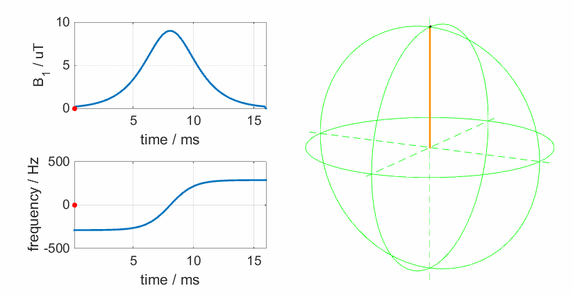

# RF pulse design and simulations: supplementary animations
### RF excitation
Excitation in the laboratory frame:
<img src="images/excite_labframe.gif" width="30%">
and in the rotating frame:
<img src="images/excite_rotframe.gif" width="30%">
### Shaped RF pulses
A sinc pulse with many lobes:
<img src="images/pulse_and_bloch2.gif" width="50%">
and a heavily truncated one:
<img src="images/pulse_and_bloch1.gif" width="50%">
An **adiabatic pulse**. The yellow line represents the effective rotation axis
for the magnetisation (this moves because the frequency is swept).

### Slice selection
A time-resolved view of slice selection (here we see just the transverse magnetisation):
<img src="images/pulse_and_slice2.gif" width="50%">
A k-space view of slice selection:
<img src="images/sta_kspace_slice.gif" width="20%">
(c) Shaihan Malik 2016